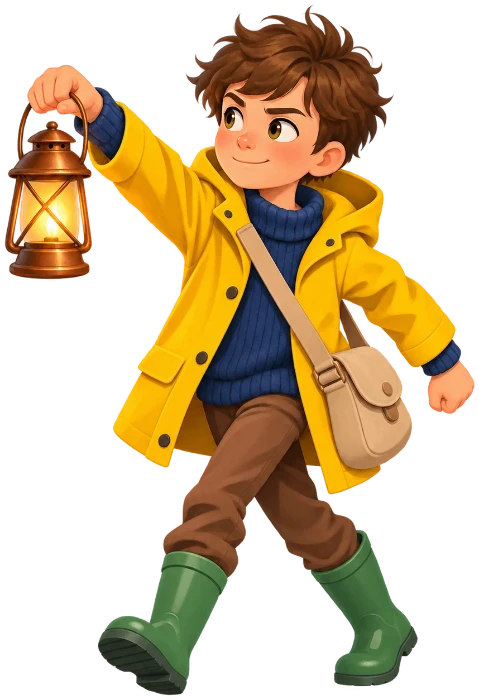

Les passeurs de brume · Recherche · Corrigé
Lis et joue une première fois. Puis garde le livre ouvert : retourne dans les passages pour explorer d’autres chemins.

Explore tous les chemins, du vieil homme jusqu’au courant du lac. Écris les noms proposés dans les cases, chacun une fois. n° 21
Scènes à placer : La pierre à 1,5 m · Le courant du lac · Refuser poliment · La barque de papa · Le pont effondré · La pierre à 135 cm · Donner une fiole · Le chemin inondé · La pierre à 1 m 22 cm
Une case représente une scène. Une flèche en pointillé : un chemin pas toujours possible.
Le chemin en pointillé n’est pas toujours possible. Quand Lou peut-il le prendre ? n° 21
Seulement s’il a donné une fiole : le vieil homme lui a parlé de la barque.Colorie les cases où plusieurs chemins se rejoignent.
Colorier « Le pont effondré », « Le chemin inondé » et « Le courant du lac ». « Donner une fiole » et « Refuser poliment » peuvent être intervertis, ainsi que les trois pierres.
À l’oral. Pourquoi faire se rejoindre les chemins ? Est-ce que cela efface les choix faits auparavant ?
On partage une même suite et on limite le nombre de scènes. Mais le lecteur conserve les informations obtenues et les effets de ses décisions.
« Lou prit une grande inspiration et chanta. » n° 8
« Par où passerais-tu, toi ? » n° 15
Dans cette histoire, qui est le héros ? le lecteur (« tu »)un personnage (« il » ou « elle »)
Le récit est au : présentpassé
Dans la seconde phrase, « tu » désigne le lecteur.
Les passeurs de brume · Recherche · Corrigé
Observe cet extrait. Appuie-toi sur ses indices pour expliquer ce que tu choisirais.
4
À gauche, le passage était étroit, bordé de roseaux. Plume vint se poser sur l’un d’eux et observa Lou de son regard perçant. À droite, le passage était beaucoup plus large. L’eau y était calme et il semblait facile d’y ramer.
Entre les deux passages, […] de vieux poteaux peints sortaient de terre. C’étaient les balises des passeurs ! Elles indiquaient le bon chemin. Mais la brume était trop épaisse pour lire les marques peintes sur les poteaux. Lou pourrait faire grandir la flamme de sa lanterne pour mieux les voir.
Monter la flamme pour lire les balises : rends-toi au 24.
Suivre le bras entouré de roseaux : rends-toi au 22.
Prendre le bras le plus large : rends-toi au 10.
Souligne les choix. Dans chaque choix, entoure le numéro qui indique où continuer.
À l’oral. Où sont les choix ? Comment lit-on la suite ? Le numéro du renvoi est-il forcément celui de la page ?
Les choix suivent le récit. Le renvoi indique une scène, pas forcément une page. En ligne, on clique.
Avant d’explorer les suites · Utilise seulement les indices déjà rencontrés.
Surligne les indices dans l’extrait. Quel choix ferais-tu ? Explique pourquoi.
Je suivrais les roseaux : Plume s’y pose. Elle connaît les chemins du lac.Après · Explore la suite de chacun des trois choix.
Complète le tableau : que découvre ou fait Lou ? Combien de réserves doit-il retirer ?
| Le choix | Ce que révèle la suite | Réserves à retirer |
|---|---|---|
| Monter la flamme | Les balises montrent les roseaux. | 1 |
| Suivre les roseaux | Lou avance vers la tour. | 0 |
| Prendre le bras large | Lou fait un détour. | 1 |
Accepter les hypothèses justifiées. Sans la réserve demandée, Lou ne peut pas continuer.
Les passeurs de brume · Recherche · Corrigé
Certains choix se préparent en observant, en se souvenant ou en réfléchissant.
Au pont effondré · Une énigme. n° 15
Devant lui, trois pierres semblaient presque à la même distance. Laquelle était la plus proche ?
Sauter sur la pierre située à 1 m 22 cm. · Sauter sur la pierre située à 1,5 m. · Sauter sur la pierre située à 135 cm.
Écris les trois distances en centimètres, puis entoure la plus courte.
1 m 22 cm = 122 cm
1,5 m = 150 cm
135 cm = 135 cm
La pierre à 122 cm est la plus proche. Lou la rejoint sans tomber ni dépenser de réserve.
Sur le lac · Souviens-toi d’une phrase lue plus tôt. n° 22
Tout droit, l’eau frissonnait, couverte de petites rides qui scintillaient sous la lune. […] Sur le côté, il pouvait faire un détour par une eau sombre, lisse et profonde.
Je passerais par l’eau sombre.
Quelle phrase du père de Lou aide à choisir ?
« L’eau qui frissonne cache des dents. » Des rochers sont cachés sous les rides.Dans la clairière · Retourne dans le livre. n° 12
Quel choix permet à Lou de vérifier la nature de la lumière ? Que remarque-t-il alors ?
Il prend le temps d’observer. La lumière est bleutée et sautille : c’est un feu follet.Ces détails apparaissent après le choix d’observer. Une vraie lanterne a une flamme dorée, calme et droite : cette information a été donnée au départ.
Quelle difficulté ou quelle peur gêne Lou sur le lac ? n° 22
Il nage mal et il a peur de l’eau profonde.Sur le lac, pourquoi cette faiblesse rend-elle le bon choix difficile ?
Le bon passage est l’eau sombre et profonde, celle qui lui fait peur.Pourquoi Lou peut-il réussir la mission alors que son père ne peut plus la terminer ? n° 17
Lou connaît le chant et, s’il garde sa voix, il peut chanter à la place de son père.Les passeurs de brume · Recherche · Corrigé
Observe la réserve d’huile, compare les fins, puis donne ton avis.
Applique cette règle dans les deux situations. Coche si le retrait est possible, écris ce qui reste (ou « impossible »), puis coche la suite.
Retire une réserve d’huile.
Si tu n’avais plus de réserve à retirer, rends-toi au 31. Sinon, rends-toi au 22.
Le compteur indique les fioles de réserve, pas l’huile déjà dans la lanterne.
Au 31, la lanterne s’éteint. Au 22, le voyage continue.
| Fioles avant | Retrait possible ? | Fioles après ou « impossible » | La suite |
|---|---|---|---|
| 1 | ouinon | 0 | continuerla lanterne s’éteint |
| 0 | ouinon | impossible | continuerla lanterne s’éteint |
Utiliser sa dernière fiole permet de continuer avec zéro réserve. Ce n’est pas la même situation que ne plus pouvoir en utiliser une.
Quel est le coût du don au vieil homme ? Que permet-il de découvrir ? n° 6
Il perd une réserve et apprend où est la barque. S’il y va, il trouve une fiole.Relis les trois fins. Pour chacune, coche si Lou retrouve son père et s’il peut encore chanter. n° 33 · n° 31 · n° 20
| La fin | Père retrouvé ? | Lou peut chanter ? |
|---|---|---|
| Lou chante au sommet | ouinon | ouinon |
| Lou manque d’huile avant la tour | ouinon | ouinon |
| Lou monte sans lumière | ouinon | ouinon |
Que deviennent les lanternes du pays si Lou chante ? Et s’il ne peut plus chanter ?
S’il chante, elles se rallument. Sinon, elles s’éteignent.Dans les deux échecs, la brume a pris sa voix. Le lecteur peut recommencer et essayer d’autres choix.
Qu’est-ce qui t’a plu ou déplu dans la façon de jouer ? Donne un exemple du livre.
Réponse personnelle, positive ou négative, justifiée par un exemple du livre.